Image Source: Reddit
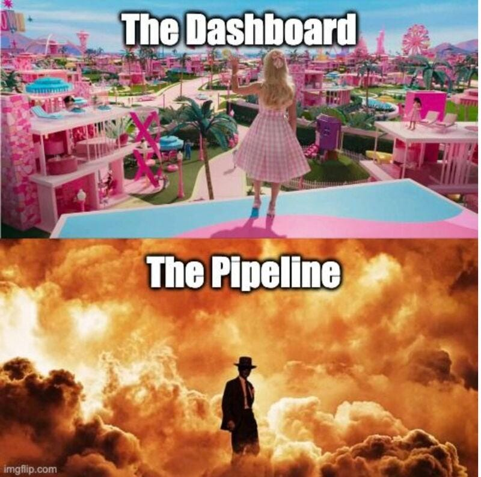
EDS 430: Part 8
Wrap up
Consider if you need Shiny at all
While a well-developed shiny app is fun, appealing, and an effective way for users to explore data, it’s worth having a conversation about whether shiny is truly necessary. . . or if taking an alternative approach to sharing your data might be better.
Shiny isn’t bad – in fact, it’s a really powerful tool
First, we don’t think shiny apps are inherently bad. They’re popular (particularly as Capstone deliverables) for a good reason – they can:
(1) effectively expose data / analytics to those who don’t have the technical or computational skills or the time to process data
(2) they can streamline otherwise obtuse workflows (Improving Monitoring and Evaluation of Enforcement in Coastal Marine Protected Areas and Fisheries (MEDS Capstone, 2023) is an excellent example of this)
(3) allow users to derive greater insights as they interact with the data
But there are some important considerations
A dashboard is only as good as the data pipeline that feeds it! You should focus most of your energy on your analytics / crafting effective data visualizations.
Related to the point above, remember that it’s easiest if we do all our data wrangling / visualization outside of the shiny framework first, before making it reactive. I recommend you continue to adopt this approach as you embark on your Capstones / GPs / projects. Ultimately, those parts are the most difficult / time-consuming / challenging to get right.
Shiny apps are difficult to maintain – they often require skilled IT personnel to deploy them onto servers, and are prone to breaking with updates to server infrastructure. Have a maintenance plan in place (including a plan for who will maintain / update the code base).
Consider if reactivity allows for insights that you can’t provide using alternative tools / formats, which may be easier to maintain.
Embed htmlwidgets into your reports / websites
htmlwidgets allow you to create interactive data visualizations using JavaScript libraries in R. They can be embedded into Shiny apps (recall we used both the {DT} package to create an interactive datatable and the {leaflet} package to create an interactive map), or into RMarkdown and Quarto Markdown reports. A well-designed reproducible report with interactive widgets is powerful, easier to maintain, and can be deployed on the web (for free) using tools like GitHub pages. Explore 130 registered widgets on the htmlwidget gallery.
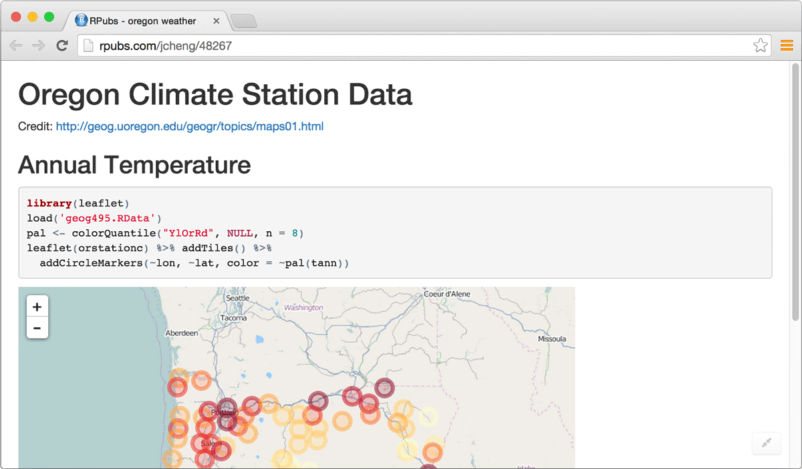
An example leaflet map embedded in an RMarkdown report. Image Source: htmlwidgets for R
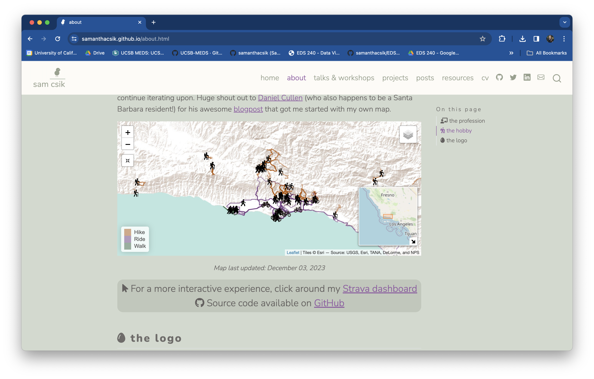
An example leaflet map embedded in a Quarto website. Image Source: my website
Compose multiple widgets into a dashboard
Have lots of interactive htmlwidgets to present? Consider composing multiple widgets into a dashboard using {flexdashboard} (based in RMarkdown) or Quarto dashboard. Both frameworks support UI layouts similar to those achieved using {shiny} / {shinydashboard} (columns, rows, tabsets, navbars, value boxes etc.). You can also optionally use Shiny to embed reactive outputs. Check out the {flexdashboard} gallery and Quarto dashboard gallery for examples and source code.
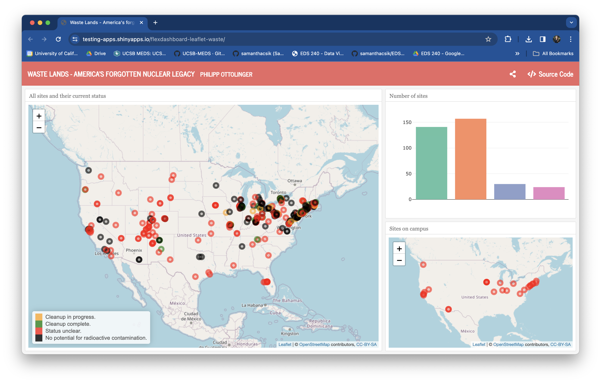
Waste Lands - America’s Forgotten Nuclear Legacy, (built using {flexdashboard})
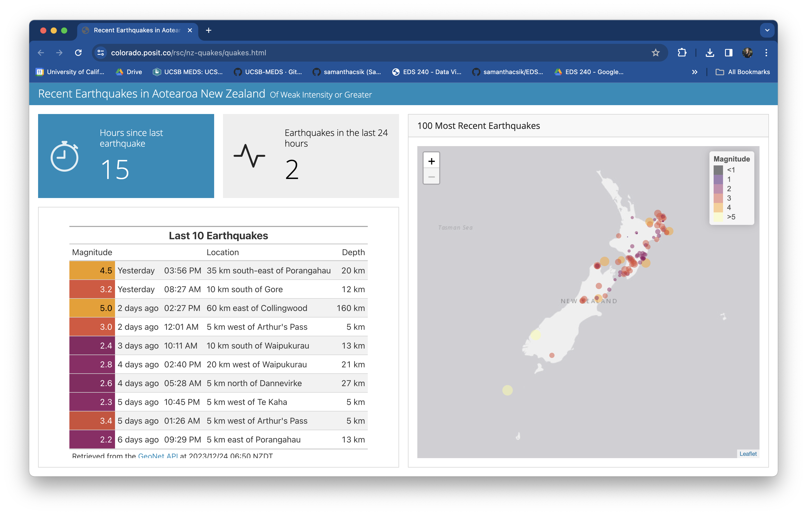
Recent Earthquakes in Aotearoa New Zealand (built using Quarto)
Embed shiny components in Quarto docs
Embed reactive shiny components (e.g. a plot with sliders that control its inputs) in Quarto documents. By using some fun new code chunk options, you can instruct Quarto to spin up it’s own self-contained shiny server to run your reactives. Read the Quarto documentation to learn more and check out some teaching examples.
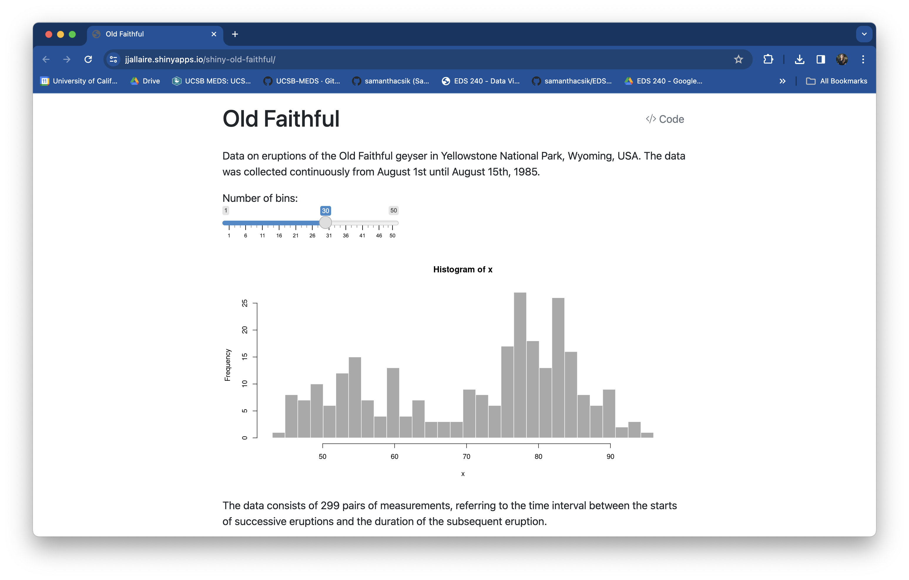
Old Faithful, which demonstrates incorporating an interactive plot into the main flow of a document. Source code
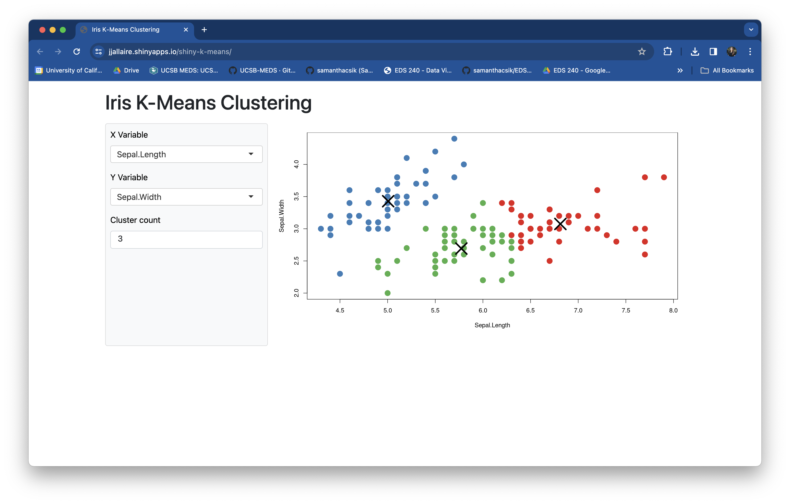
Iris K-Means Clustering, which demonstrates using a more “application-like” page layout (sidebar and main panel). Source code
Run serverless shiny apps using Shinylive
Shinylive is a serverless version of Shiny, which was recently annoucned at posit::conf(2023) by Joe Cheng (rewatch his talk!). It supports Shiny for both R and Python (that’s right, you can build shiny apps using Python too! See Shiny for Python for more info). You have a few options:
{shinylive} package for R or {shinylive} package for Python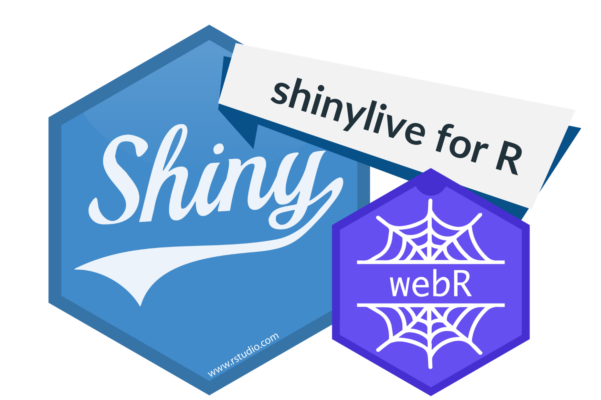
Image Source: Run a Shiny app in the browser with shinylive for R, by Veerle van Leemput
Recap
We covered a lot over the past two days! Let’s quickly review some of the topics that we discussed.
Shiny apps are made up of a UI & a server
Shiny is an open source R package that provides a framework for building interactive web apps without having to know HTML / CSS/ JavaScript.
Apps made up of a UI (which controls the layout / appearance; the part a user sees / interacts with) and a Server (which handles the logic)

Reactivity = a user updates values via widgets in the UI server performs some logic to return an updated output output is rendered in the UI

Choose a single-file or two-file setup
We can create apps using either a single-file, (app.R) or two files (ui.R + server.R). A single-file setup are great for building small apps, and especially great for building reprexes. A two-file setup is best for larger apps (and likely what you’ll want to opt for).
You can optionally use a global.R file to store objects that are used across your app (libraries, data, etc.).
Follow three rules for creating reactivity:
(1) Add an input (e.g. sliderInput) to the UI that users can interact with
(2) Add an output (e.g. plotOutput) to the UI that creates a placeholder space to fill with our eventual reactive output
(3) Tell the server how to assemble inputs into outputs:
save objects you want to display to output$<id>
Build reactive objects using a render*() function
Access input values with input$<id>
And remember to always build your data filtering pipelines & visualizations outside of shiny before trying to make them reactive.
Use layout functions to organize your UI
How you organize the visual structure of your app’s UI can affect not only how aesthetically-pleasing it is, but also how users will interact with it. {shiny} includes a number of layout functions, or use {shinydashboard} to access additional functions for creating classic “dashboard-style” layouts.
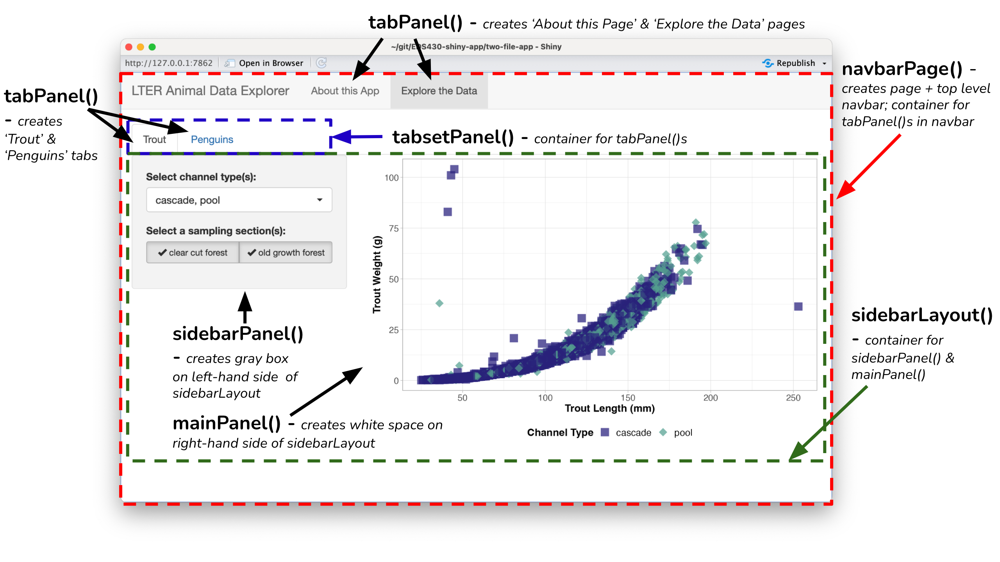
It’s easy to lose track of parentheses when using lots of layout functions. Remember to use rainbow parentheses, code comments, and appropriate spacing between lines to stay organized.
Deploy with shinyapps.io, if possible
There are a number of ways to deploy a shiny app, but stick with shinyapps.io whenever possible – it’s the quickest and fastest way to securely host your app. The free tier allows you to host 5 apps with up to 25 active hours a month, however it’s easily scalable with a number of paid plan options.
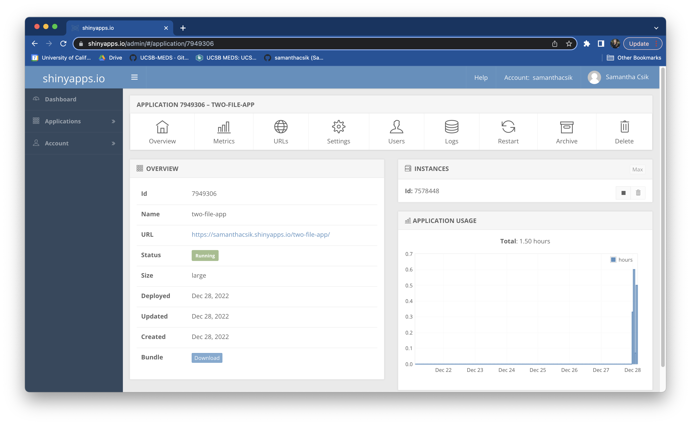
The shinyapps.io dashboard
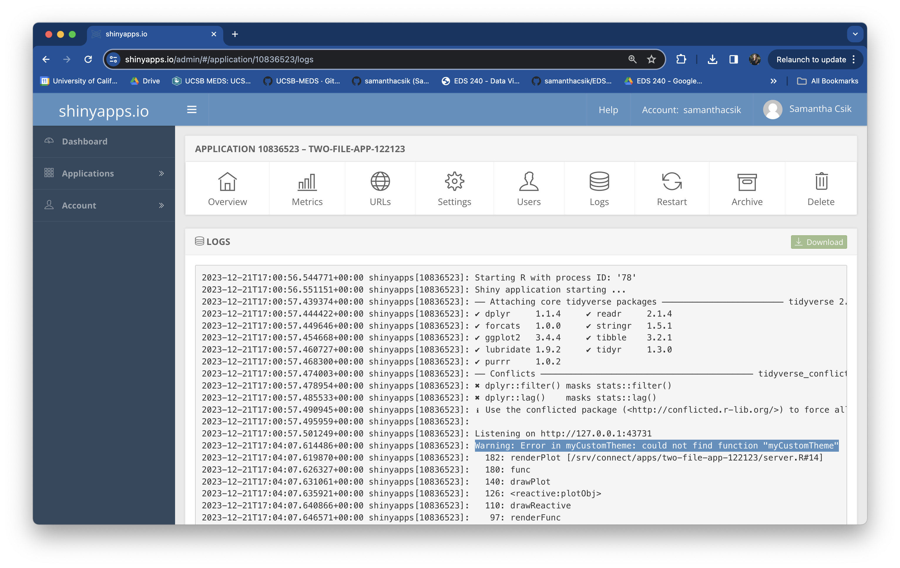
A deployment log on shinyapps.io
The shinyapps.io dashboard provides lots of helpful information, particularly the deployment log – remember to check here for information about failed deployments.
There are a number of tools for styling apps
{bslib} and {fresh} provide user-friendly functions for automatically generating and applying CSS styles to update update colors & fonts across your app.
Alternatively, write your own Sass (.scss) file to fully customize your app’s appearance. Use the {sass} package to compile it to CSS and link the resulting .css file in your app’s header.
Design for your users
Take out any guesswork:
{shinycssloaders} to add loading animations to shiny outputsKeep in mind some fundamental UX / UI rules:
Build accessible apps:
Debugging is tricky, but there are tools / strategies
Debugging shiny apps can be tricky, since code execution isn’t linear and because code runs behind a web server and the shiny framework. When you encounter errors, remember to try the following:
{reactlog} to visualize reactivity errors Creating automated checks that your app is working as expected (using frameworks like {shinytest2}) can also save you lots of time and headache in the future.
Streamline code with functions & modules
Turning portions of your app into functions or modules is not necessary(!), but it can help you better organize your code base, reduce redundancy and complexity, increase code comprehension, and increase testability. Create functions for code that are either completely on the UI side or completely on the server side. Create modules for code that spans both.
It can be a lot to get comfortable with the shiny framework and work on your analyses / visualizations and write functions / modules. Consider writing parts (or even all) of your application first, then go back to refactor (restructure / rewrite) your code to improve it’s structure / organization.
This is a Quarto Presentation. To learn more, visit https://quarto.org.
If you see mistakes or want to suggest changes, please create an issue on the source repository.